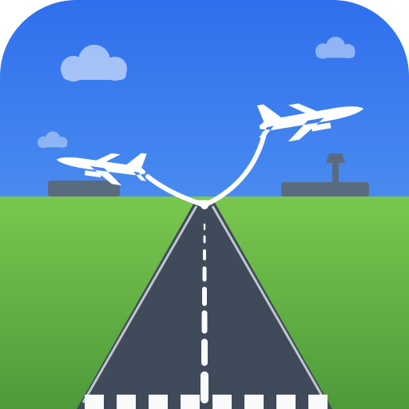
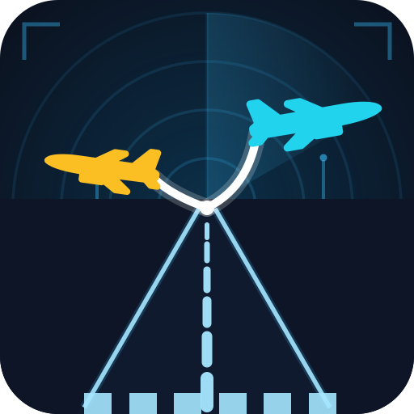
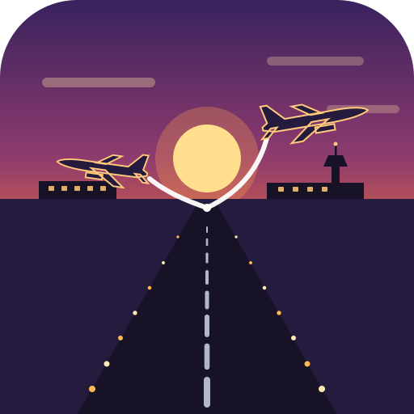
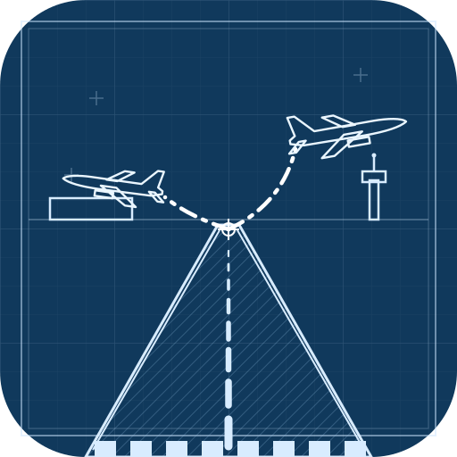
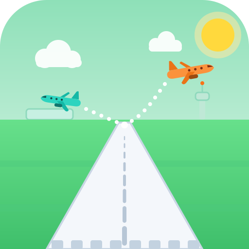

镜头正对跑道纵深:双机从同一侧跑道尽头(灭点)离地,一前一后分别向左、右两侧飞离,身后白色线条为运动轨迹。每张下方附 48px / 24px 缩放与深色任务栏模拟。
透视跑道 + 白机白航迹,经典应用图标风格,浅色环境最亮眼。

雷达环以跑道尽头为圆心,扫描扇区 + 青/金双机,白色航迹呈分叉光弧。

落日正对跑道尽头,双机剪影从夕阳两侧分航,跑道灯向灭点收束。

工程制图风:网格图框、剖面线跑道、灭点十字标与描线飞机。

圆润双机(橙/青)从跑道尽头分航,白色点状轨迹,亲和力最强。
